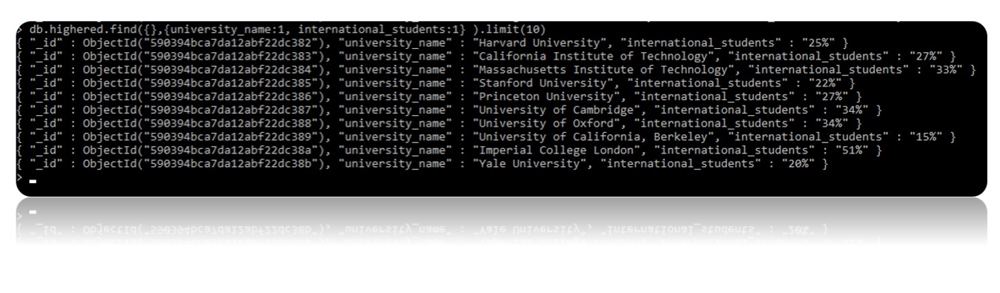
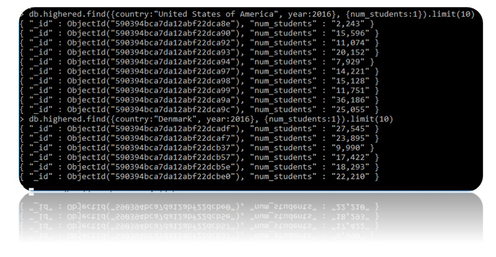

Samuel Lall
I590 SQL NoSQL
Indiana University
This website was created to present my work related to my Final Project for I590 SQL NoSQL class taught by Professor Ying Ding at Indiana University. The presentation of this work is strictly for academic purposes
Introduction
The primary focus of this project is to build a database and query the data to find insight into a domain of interest.
The domain of interest I selected for this project is the correlations between the happiness of a country and education in
relation to a dataset known as the World Happiness Report. This report does not contain any data relating to how education may
impact happiness of a country. I queried three different datasets: The 2016 World Happiness Report, the Times Higher Education World
University Rankings 2011 -2016, and a National Center for Education Statistics dataset on expenditures on education as a percent of
GDP by country. Using mongodb as my primary database, I will query and research these datasets to find any correlation between a country’s level of happiness
and education.
In addition to mongodb, a NoSQL database, I also created XML databases to help present the data.
You can click on the links below to view the XML pages and review the collections of data.
One of the queries I performed on the world happiness collection, titled “happiness”, was to find the countries with the top ten
happiness ranks. I used the command db.happiness.find({}).limit(10).pretty( ). Then I queried the world university ranking collection,
titled “highered”, to find the number of universities and their ranks. For example, Denmark was ranked 1st in happiness in 2016, so I
wanted to find out how many top ranked universities they had in 2016. I used db.highered.find( {country: "Denmark", year: 2016}, {world_rank:1} )
to find the universities ranks and db.highered.find( {country: "Denmark", year: 2016} ).count() to find the total.

The results of my queries showed that there was no obvious correlation between number of top universities and happiness rank. Iceland
had only 1 top ranked university, but they also had a higher happiness rank than Australia which had 31 top universities. Once I finished this
set of queries I moved on to query the educational expenditure data, collection title “edexpense.” I queried this collection to find
the educational expenditures for countries in the top ten happiness ranks. For example I used the command db.edexpense.find( {country: “Denmark”} , {institute_type:1 , 2011:1} )
to find the expenditures for elementary, secondary, and higher education in the year 2011. In the edexpense collection each expenditure
is represented as a percent of GDP. The results of the query showed that the countries in the top 10 happiness ranks spend between 3.5% - 4.9% on
elementary and secondary education and between 0.7% - 1.8% on higher education.

I queried the US to compare the numbers and found that the US ranked 13th in happiness, spent 3.4% on elementary and secondary education and 0.9% on
higher education, had 146 of the top universities, and 14 of those were in the top 20 universities in the world.

The next query I wanted to perform was to find out how many students at the top universities were international students. I used
the command db.highered.find({},{university_name:1, international_students:1} ).limit(10) to query the top ten universities. The
results ranged from 15% - 51% with most either being in the mid 20% or mid 30%. If 20 to 30 percent of your students are graduating
and going to another country to make their living this may also be a factor as to why education may not be having a stronger impact on
a country’s overall happiness.
I wanted to find out the number of students per year that were potentially graduating and joining the workforce. Out of the top
ten US universities in 2016 alone there were over 159,000 students enrolled with the potential to graduate and get a high paying job.
In Denmark, there were only 6 universities in the top ranks, however, there were over 119,000 students enrolled in Denmark’s top 6 universities.
